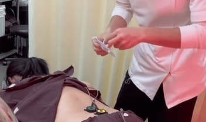
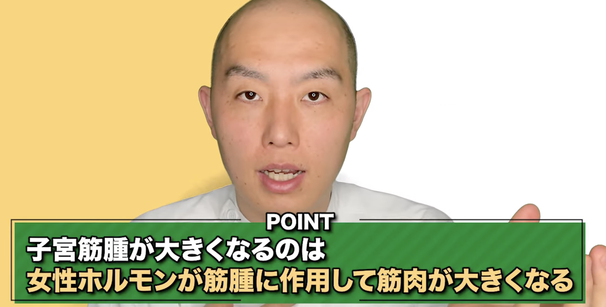
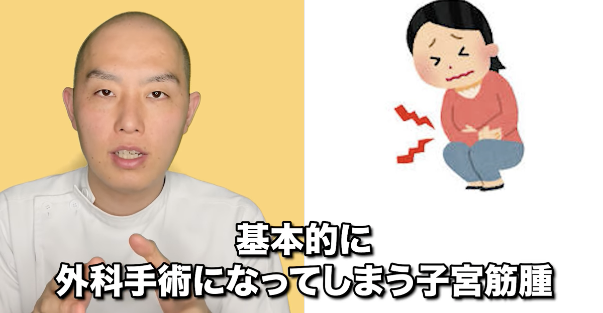
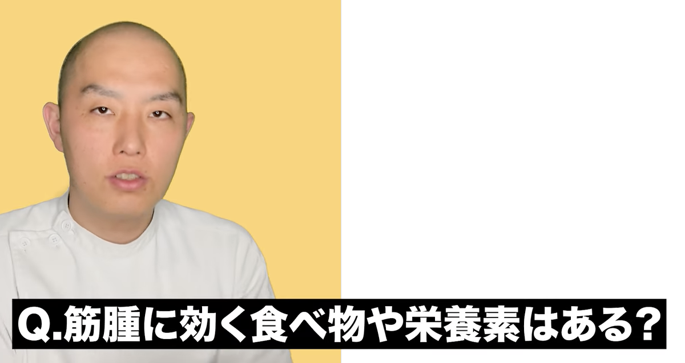
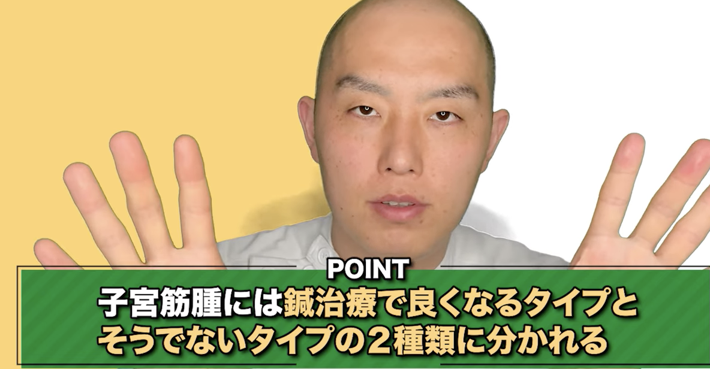
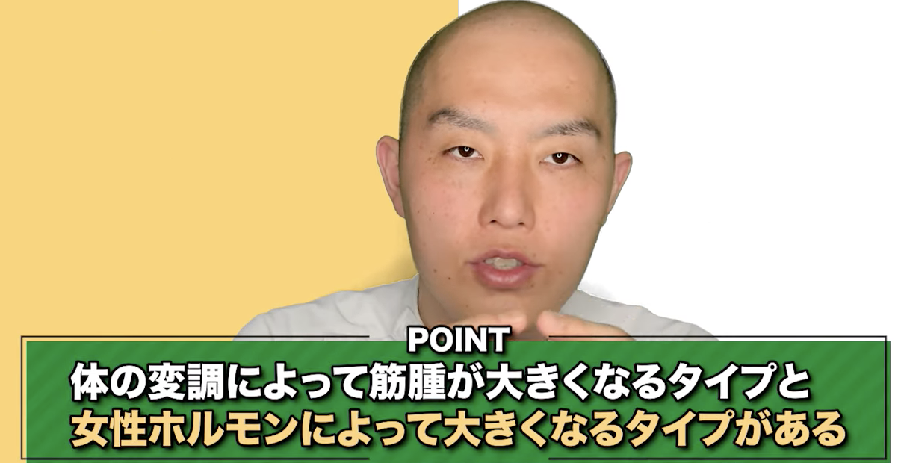

子宮筋腫を小さくする鍼灸の鍼灸
30歳以上の女性の約4人に1人にみられる子宮筋腫に対し、骨盤内の血流と自律神経バランスを整える施術解説。
院長YouTube解説・関連動画

子宮筋腫の症状は多種多様

子宮筋腫の初期は自覚症状が現れないことも多く、ただの体調不良でもよくある症状のため、軽度のだとあまり気に留めません。
症状が強くなって初めて異変に気付き病院に行く方が多いです。
症状の現れ方で、子宮内のどの場所に筋腫ができているかの予想することが出来ます。症状は、大きさ、数によっても異なります。
筋腫自体が悪性化することは非常に稀ですが、筋腫が大きく成長することで標準的な症状が悪化することはあります。
- •症状 症状別特徴 筋腫の急速な成長 筋腫の中で血流が乏しくなることで細胞の壊死が起こり、痛みや炎症が生じる 子宮のねじれ 特に柄のある筋腫が原因となり、急性の痛みや血流障害を引き起こすことがある。 妊娠・分娩の障害 筋腫が子宮内腔に存在する場合、妊娠の妨げとなることがある。 分娩時に筋腫が障害となり、帝王切開が必要となることもあります
重症化した場合は、速やかに病院に行くことが必要です。
子宮筋腫の原因には女性ホルモンが関係している

子宮筋腫が発生する原因は十分解明されておらず、有効な予防法もありません。
以下の特徴があります。
- •筋腫の発育には成長にエストロゲン、プロゲステロン(黄体ホルモン)などと女性ホルモンが関係しています。
- •原則的に閉経までは大きくなり次第に数が増えていきます。
- •子宮筋腫の成長は女性ホルモンに依存しています。
- •閉経後は卵巣からのホルモンがなくなるので筋腫は萎縮します。
- •ホルモン剤を中止すると数か月で改善を行う前と同様の状態まで戻ります。
- •個人差が大きく、長期間ほとんど大きさが一定の場合もあります。
- •子宮筋腫は遺伝する病気ではありません。
- •閉経直前の発症の場合、改善として女性ホルモンを低下させる薬が用いられます。
子宮筋腫の調べ方と効果的な手術
子宮筋腫を判断する際に調べる方法は以下の通りです。
1. 触る
婦人科で横たわった状態で、医師が腹部や骨盤を触り、子宮の大きさや形状、硬さを評価します。
2. 超音波（ソノグラム）
外陰部や腹部から超音波プローブを当てることで、子宮や卵巣の状態を画像として確認します。また、膣内超音波という方法で、膣内からプローブを挿入してより詳細に子宮の状態を評価することもあります。
3.MRI（磁気共鳴画像法）
筋腫の大きさや位置、数を詳細に確認するために使用されることがあります。特に手術を検討している場合や、筋腫が大きい場合に有効です。
4. ヒステロソノグラム
子宮の内部に生理食塩水を注入しながら超音波検査を行い、子宮の内腔や内膜の状態を詳しく評価します。
5. ヒステロサルピンゴグラフィー（HSG）
子宮や卵管の通りやすさを確認するために、造影剤を子宮に注入してX線撮影を行います。主に不妊の検査として行われますが、筋腫が子宮の内腔に突出している場合にも確認できます。
6. 子宮鏡（ヒステロスコピー）
細長いカメラを子宮の内部に挿入して、直接子宮内腔を視覚的に評価します。子宮の内腔に突出する筋腫を確認するのに有効です。
7. 生検
筋腫と疑われる組織の一部を取り出して、病理学的に評価します。筋腫以外の良性や悪性の病気を除外するために行われることがあります。

子宮筋腫に対して、効果的な手術を選択する際は、以下の要因を考慮することが重要です。
例えば、過多月経が主な症状の場合、子宮内膜アブレーションが選ばれることがある。
ここで、各手術法と歴史、メリット、デメリット、適応タイプをご紹介します。
アプローチ方法
アプローチ方法
アプローチ方法
アプローチ方法
アプローチ方法

子宮筋腫に効果があるとされる漢方薬をいくつか紹介いたします。ただし、こちらでご紹介する漢方は当院に来院された利用者様が処方されていたものです。
冷え性や血の巡りを良くする効果があります。
生理不順や生理痛の改善に役立つことが期待されています。
子宮筋腫に効果があるとされる薬をいくつか紹介いたします。ただし、こちらでご紹介する薬は当院に来院された利用者様が処方されていたものです。
子宮筋腫の東洋医学的解釈と効果のあるツボ

子宮筋腫はさまざまな解釈があります。
東洋医学的観点では、からだのエネルギーである気血がなんらかの理由で停滞し、瘀血という体質を発生させます。
この瘀血が子宮内に溜まると子宮筋腫が起こります。あるいは、痰湿が子宮内に溜まることでも起こります。
それらの原因は、前述したように解明されていないことが多いですが、ストレス、不規則な生活、外傷などが主な原因で起こるのではないかと言われています。
当院では、筋腫の原因が瘀血タイプか痰湿タイプかを見極め、施術にあたります。
瘀血の場合
長期間の精神的な刺激、または生活の不摂生で、気血が停滞したために生じます。可動性が無い腫塊、月経量過多・血塊、月経日数の延長、周期不定帯下が多いなどの症状があります。妊娠しにくく、妊娠しても流産しやすいのが特徴です。
この場合、血流を良くし、腫れを引かせる作用がある血海、太衝、合谷、 子宮などのツボを使います。血の巡りをよくし、瘀血を除くことで、筋腫を小さくします。
痰湿の場合
痰湿は、冷え、偏った食事などにより、脾胃の働きに悪影響を与えて脾の機能が弱くなることで生じます。
脾の余分な水分の滞りを取り去り、むくみを消す作用のある上巨虚、豊隆、三陰交、足三里などのツボへの施術で、子宮筋腫を小さくします。
子宮筋腫が鍼灸で小さくなる根拠

鍼灸による子宮筋腫の有効性は認められておりませんが、当院の実績では、きわめて高く、多数の臨床報告があります。
現状、６回の鍼灸で子宮筋腫は３ｃｍ前後小さくなります。２回の鍼灸で１cmは小さくなります。
ただし、６㎝～９㎝の筋腫が一番効果が高く、乳児のような巨大な腫瘤に関して、現在、施術経験はございません。当院が担当している最大の筋腫は１３㎝で、１㎝ほど小さくなっております。
経験論としては５ｃｍ～９ｃｍまでは鍼灸が有効だと考えられています。それ以上だと手術を視野に入れるべきになります。
鍼灸では子宮筋腫が小さくなっても目視や自己感覚ではわかりません。そのため、まず産婦人科に行き、筋腫のサイズを測っていただいています。サイズを知った状態で鍼灸を行い、その後、また産婦人科に行ってサイズを確認してもらっています。
2つの増大タイプと「刺激量制御」の重要性
銀座そうぜん鍼灸院の臨床解説では、子宮筋腫への鍼灸で最も重要なポイントとして「刺激が強すぎるとエストロゲン分泌や血流が過剰に活性化してしまうため、刺激量を精密にコントロールすること」を挙げています。また、東洋医学の弁証により瘀血（おけつ）タイプと痰湿（たんしつ）タイプを見分けて選穴します。
筋腫サイズは自覚症状だけでは判断できないため、必ず産婦人科でのエコー検査等による客観的な経過観察と併用し、9〜10cm以上の大型筋腫や強い症状がある場合は手術・薬物療法を含めた専門医の判断を優先します。
子宮筋腫ケアに用いられる代表的な8つのツボ

📌 詳細データ・ツボ一覧表を開く▼
| ツボ名（経穴） | 位置の目安 | 主な狙い・役割 | セルフケアの注意点 |
|---|---|---|---|
| 血海（けっかい） | 膝のお皿の内側上角から指3本分上 | 瘀血タイプ推奨。骨盤内血流・月経痛・経血の滞りケア | 青あざになりやすいため心地よい圧・お灸で |
| 三陰交（さんいんこう） | 内くるぶし頂点から指4本分上、すねの骨の後ろ際 | 2025年レビュー最頻用・痰湿タイプ推奨。婦人科全般の調整 | 妊娠中・妊娠の可能性がある場合は刺激禁忌 |
| 関元（かんげん） | おへそから真下に指4本分（3寸）下 | 2025年レビュー最頻用。下腹部の温補・骨盤内循環調整 | 筋腫が大きい場合の下腹部強圧は禁忌。優しい温熱のみ |
| 中極（ちゅうきょく） | おへそから真下に指5本分（4寸）下 | 膀胱の募穴。圧迫による頻尿・下腹部うっ血の緩和 | 排尿後に優しく温める程度にとどめる |
| 子宮（しきゅう・奇穴） | 中極から左右それぞれ指4本分外側 | 2025年レビュー頻用・瘀血タイプ推奨。子宮周囲循環調整 | 過多月経中・不正出血時は下腹部直接刺激を避ける |
| 太衝（たいしょう） | 足の甲、親指と人差し指の骨が交わる手前 | 瘀血タイプ推奨。ストレス・ホルモン変動のイライラ緩和 | 痛気持ちいい強さでゆっくり押圧 |
| 豊隆（ほうりゅう） | 膝外側と外くるぶしの中間、すね骨から指2本外側 | 痰湿タイプ推奨。水分代謝・むくみ・胃腸機能調整 | 指圧・お灸ともに比較的安全に行いやすい部位 |
| 足三里（あしさんり） | 膝の外側下のくぼみから指4本分下 | 痰湿タイプ推奨。貧血に伴う倦怠感・全身の体力底上げ | お灸や指圧向き。低温やけどに注意 |
査読論文が示す「子宮筋腫×鍼灸」のエビデンスと限界
国際的な医学レビューでは、「鍼灸単独で子宮筋腫を確実に縮小させる」確立したエビデンスは未だ不十分とされています。近年のメタ解析では症状緩和・体積減少の有望な報告がある一方、非盲検や高異質性という限界を正しく理解したうえで、婦人科の定期検診と併用することが大切です。
📚 査読論文データ・出典表を開く▼
| 年・研究デザイン | 対象・規模 | 主な結果と臨床的意義 | 限界・出典 |
|---|---|---|---|
| 2010年 Cochraneレビュー | 適格な二重盲検RCT 0件（n=0） | 厳格基準を満たす試験がなく、有効性・安全性は「不確実」と結論。過度な断定を避ける最重要指針。 | 高品質RCT不足を明示。Cochrane (PMID: 20091625) |
| 2023年 メタ解析 | 子宮筋腫 11 RCTs（計735名） | 筋腫体積MD=−3.89（p<0.00001）、症状スコアMD=−3.03（p<0.00001）、エストロゲン値は有意差なし（p=0.1）、重篤な有害事象なし。 | 全11件が中国語・非盲検・高異質性（I²=91%）。Front Med (PMID: 38152298) |
| 2024年 メタ解析 | 子宮筋腫 9 RCTs（計640名） | 鍼灸＋漢方 vs 漢方単独で総有効率RR=1.20（p<0.00001）、筋腫サイズSMD=−0.82（p=0.003）。 | 漢方併用下の上乗せ・高異質性（I²=90%）。Front Oncol (PMID: 39640285) |
| 2023年 後ろ向き比較 | 子宮筋腫 102名（薬物併用52 vs 単独50） | 併用群で奏効率96.15% vs 76.00%（p=0.003）、炎症指標・血流速度が改善、有害事象差なし。 | 観察研究・国内未承認薬併用。Am J Transl Res (PMID: 37692932) |
| 2025年 経穴レビュー | 英語文献24処方・53経穴 | 最頻用穴は関元・三陰交・子宮・中極。臨床試験のさらなる蓄積が必要と結論。 | 経穴選択の記述レビュー。Health Sci Rep (PMID: 41324111) |
| 2026年 症例報告 | 過多月経を伴う子宮筋腫（n=1） | 週2回×2か月の鍼通電後、経腟エコーでの縮小と過多月経・倦怠感の軽減を確認。 | 単一症例・標準治療の代替不可。Clin Case Rep (PMID: 41710500) |
産婦人科の受診を最優先すべきレッドフラッグ
⚠ 速やかに産婦人科・救急を受診すべきサイン
急速な筋腫の増大や閉経後の増大（巨大筋腫の約0.5%は悪性の子宮肉腫とされMRI鑑別が必須：日本産科婦人科学会）、突然の激しい下腹部痛・発熱（茎捻転・変性の疑い）、夜用ナプキンが1〜2時間持たない過多月経や強い貧血症状、排尿困難・下肢の強いむくみがある場合は、直ちに専門医療機関を受診してください。
参考文献・出典
- 銀座そうぜん鍼灸院「子宮筋腫を小さくする鍼灸【原因・症状】」
- 日本産科婦人科学会「子宮筋腫」／日本婦人科腫瘍学会「子宮筋腫」
- Zhang et al., Cochrane Database Syst Rev (2010) — PubMed PMID: 20091625
- Ren et al., Front Med (Lausanne) (2023) — PubMed PMID: 38152298
- Chen et al., Front Oncol (2024) — PubMed PMID: 39640285
- Yao et al., Am J Transl Res (2023) — PubMed PMID: 37692932
- Hooshyarazar et al., Health Sci Rep (2025) — PubMed PMID: 41324111
- Hooshyarazar et al., Clin Case Rep (2026) — PubMed PMID: 41710500
よくある質問（FAQ）
Q. 産婦人科での経過観察や漢方と併用できますか？▼
Q. どのタイプの子宮筋腫でも相談できますか？▼
Q. 自宅でできるケアはありますか？▼
あわせて読まれる関連疾患（特に対応することが多い症状）
感染後に長引く倦怠感・ブレインフォグ・嗅覚障害・自律神経症状に対し、全身の自己回復力を引き出す施術解説。
肘の内側での尺骨神経圧迫による小指・薬指のしびれに対し、前腕の深層筋を緩め神経再生を促す施術解説。
吸入薬で止まらない長引く空咳に対し、自律神経・気管支神経の興奮と逆流性食道炎の視点から整える施術解説。
首・鎖骨・胸まわりでの神経圧迫による腕や手のしびれを、斜角筋・小胸筋などの深層筋鍼灸で解放する解説。
交感神経と副交感神経のバランス崩れによる不眠・倦怠感・めまい・胃腸不調を、体と神経の両面から整える解説。
お尻の深い筋肉（梨状筋）の硬結による坐骨神経痛・足のしびれを、深層筋トリガーポイント鍼灸で解放する解説。
おひとりで悩まず、まずはご相談ください
銀座本院・川口・大宮・横浜・博多・田無の各院でご予約を承っております。